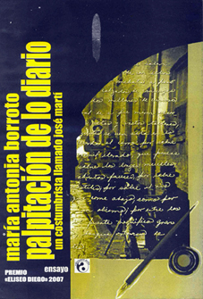

El modernismo literario es el tema que ha atraído a la autora, quien se ha acercado particularmente al periodismo de Casal y al de Martí motivada probablemente por su práctica sistemática del periodismo, junto a su desempeño profesoral e investigativo.
En el caso de este ensayo titulado Palpitación de lo diario; un costumbrista llamado José Martí, y que resultara ganador del premio Eliseo Diego del año 2007 de la editorial Ávila, como nos indica su título, la profesora Borroto sostiene el criterio de que hay un ejercicio del costumbrismo por parte del Maestro, sobre todo, aunque no sólo, en sus Escenas norteamericanas.
Llamo la atención de que no nos encontramos ante un extenso estudio monográfico sino frente a un ensayo que cumple justamente de modo elegante e inteligente sus funciones de advertirnos con mirada propia acerca del tema en cuestión. Así, tras señalarnos en los primeros epígrafes acerca de la relación entre costumbrismo y modernismo, y de hacernos notar que el costumbrismo adquiere entre los modernistas tintes muy diferentes en tanto el subjetivismo es una peculiaridad de la prosa modernista, María Antonia Borroto se adentra con mano segura en las crónicas martianas acerca de Estados Unidos para los periódicos.
Ahí también revela y entrega lúcidas apreciaciones en torno a las numerosas muestras de costumbrismo en dichos textos, indicativos de que hubo, a su juicio, una vocación en Martí similar a la de los costumbristas, aunque en su caso ello se relaciona con su particular concepción de la prensa como reflejo de lo diario, como una nueva épica.
De hecho, al mismo tiempo, la autora ofrece numerosas apreciaciones acerca del periodismo martiano, al que considera la muestra de la prosa literaria del Maestro, aportando así una contribución interesante a ese punto que la estimativa más actual está reconsiderando.

Un aspecto importante para mí del ensayo es su capaz manejo de la bibliografía, que se mueve lo mismo con Federico de Onís y Miguel de Unamuno que con Calinescu, Julio Ramos o Ivan Schulman, y que incorpora con acierto las siempre sagaces observaciones de Fina García Marruz. Sin servilismos, con las referencias necesarias a su objeto, la autora demuestra plena actualización en lo publicado acerca de Martí y sus Escenas norteamericanas y se vale con suficiencia de las armas precedentes para sostener su genuina mirada sobre su tema. Al mismo tiempo, hace cabal empleo del mundo literario cubano para insertar de esa manera a Martí en su propio orbe nacional, del que bien sabemos tuvo amplio conocimiento y al que dedicó sistemática atención.
María Antonia Borroto se sitúa, pues, con este ensayo, en posición importante dentro del campo de los estudios martianos, y es para mí satisfactoria muestra de esa sangre joven y fresca que tanto necesitamos en este campo de estudios.